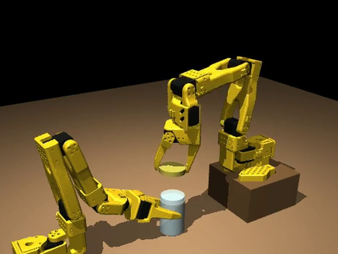
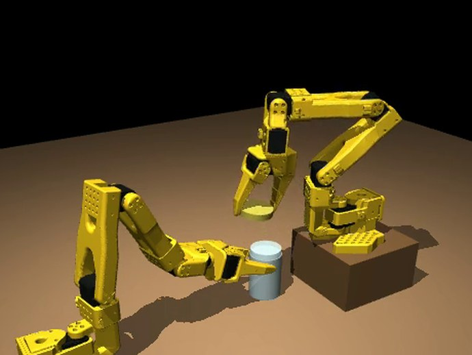
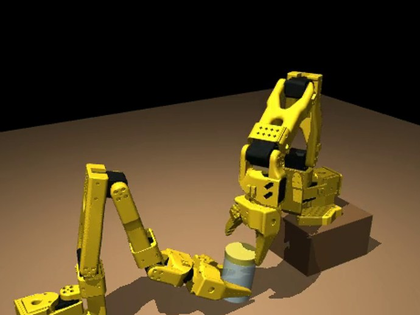
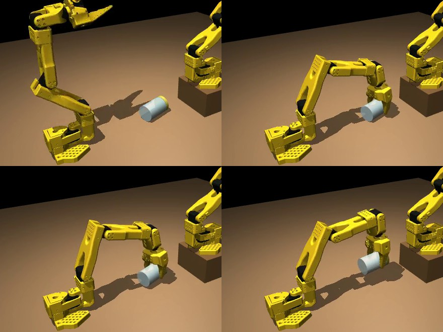
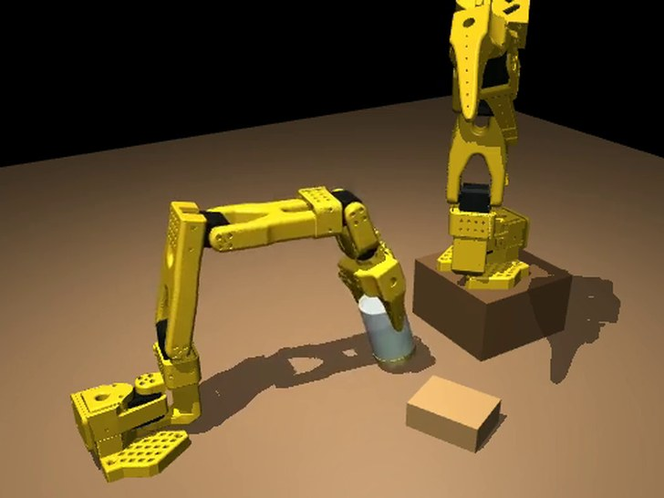
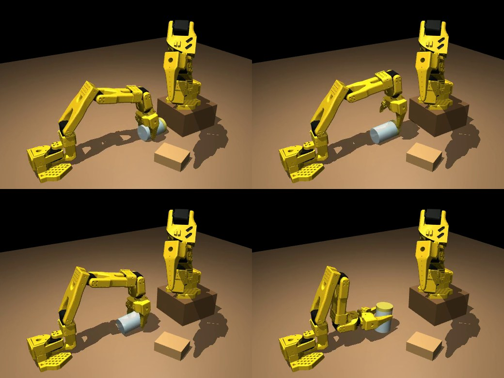

第 1–4 次
果醬罐
果醬罐
Kith 自己寫程式
指令只有一句話：「打開桌上的罐子：把蓋子拿下來。」Kith 查看手臂具備的技能，寫出一份程式。前幾次都失敗了：罐子滑走，蓋子沒有轉動。到了第四次，蓋子的密封終於鬆開。
為什麼重要： 這個任務的步驟，沒有人事先寫好。
示範
Kith 精華紀錄 · 開罐子
Kith 是大腦，兩支低成本、不精確的機器手臂是身體。它們的工作：把罐子的蓋子打開。沒有人事先寫好步驟，罐子也不一定從容易的狀態開始：有時橫躺，有時倒放、上面還壓著一塊 Kith 事先完全不知道的木塊。每次出了問題，Kith 都從自己的量測中找出原因、試著修正，並保留有效的做法。沒有任何 AI 模型為此接受訓練或微調：Kith 靠推理自己的紀錄，以及老師的簡短建議來學習。
僅限模擬 · 尚未在真實機器人上驗證這裡的 AI 模型是原樣使用的：沒有訓練、沒有微調，模型的權重從未改變。Kith 的學習發生在模型之外，有三種方式：
Kith 學到的東西以文字存在它自己的記憶裡（課程、檢查、限制），而不是存在模型裡。所以之後可以換上更好的模型（在這個任務上還沒有測試過）。
六個習慣，都出現在下面的過程裡。它們都不是為罐子寫的：來自所有 Kith 任務共用的 Kith Core。所以下一個任務，一開始就具備這些習慣。
兩支手臂都是 SO-101，一種低成本的開源機器手臂，模擬時採用它真實的馬達和限制。每支手臂都有兩指夾爪：一支握住罐子，另一支轉蓋子。
指令只有一句話：「打開桌上的罐子：把蓋子拿下來。」Kith 查看手臂具備的技能，寫出一份程式。前幾次都失敗了：罐子滑走，蓋子沒有轉動。到了第四次，蓋子的密封終於鬆開。
為什麼重要： 這個任務的步驟，沒有人事先寫好。
第 5 次之後，Kith 根據自己的紀錄，開了一個「卡關」案例。它列出三個可能的原因，並設計兩個小實驗來分辨。實驗排除了其中一個原因，也顯示夾住蓋子的動作每轉一次，就把罐子推得更遠：5、9，再到 13 毫米。它的第一個修正沒有成功，Kith 也照實記錄下來。
為什麼重要： Kith 用實驗代替猜測，並誠實記錄。
「這是兩支手臂合作的情況，計畫中應該考慮如何最能幫助負責工作的那隻手。例如，握住罐子的手應該把罐子擺在讓轉蓋子的手最容易工作的位置。」老師，看完第 6 次之後
依照老師的意思，Kith Core 把這句話保存為一條課程，適用於所有由多隻手或多台機器人共同完成同一個目標的任務，而不只是這個罐子。接著，Kith 張開夾爪，量測轉蓋子的手腕往兩個方向各能轉多遠。兩次之後，它自己的程式第一次把蓋子轉鬆了。但蓋子鬆脫後它還繼續轉，這也指出了下一個要學的東西。
為了測試復原能力，我們故意弄壞握罐子的夾爪，而且沒有告訴 Kith。Kith 從自己的讀數發現了問題。它嘗試了老師曾提過的點子：把罐子壓在牆上，並改良出十一種做法。當伸手可及的每個表面都失敗後，它問道：
「還有其他方法，或這裡有其他東西，可以讓我在轉蓋子時，讓罐子不跟著轉嗎？還是應該等握罐子的夾爪修好之後，再開罐子？」Kith，在它給老師的問題中
老師說不要用牆了，改用一個握罐子的手能穩穩握住的小罐子。從這裡開始，罐子換成了香料罐。
為什麼重要： 一個清楚、說明已經試過什麼的問題，能節省專家的時間。
「規劃者應該在整個預定的動作序列中埋好檢查點（例如檢查夾得夠不夠緊、蓋子有沒有偏離軌道），以便盡快做出調整。」老師
Kith Core 當天早上就為所有任務做好了這項功能。在第 3 次嘗試中，Kith 的程式帶了 21 個檢查。有七次，情況和計畫不同。每一次，模擬世界都會暫停，由 Kith 決定怎麼做（繼續、修改剩下的計畫，或發問），然後繼續執行。
第 7 次時，罐子倒了，程式卻仍把它當成站著來夾。Kith 從這個錯誤寫出一條規則：只有在最新一次觀察顯示罐子站著時，才用夾站立罐子的方式去夾。保留這條規則之前，Kith 先在舊的紀錄上重播測試：它會在錯誤的夾取前五步就發出警示。兩次之後，這條規則在正確的時刻讓一次執行停了下來。我們稱之為「重播挖掘」（Replay Mining）。
為什麼重要： 每一個錯誤都讓下一次更安全，而且每條新檢查在保留之前，都先在過去的紀錄上驗證過。
Kith 夾蓋子時常常偏離中心，把罐子推開。技能庫裡因此新增了一項適用於任何兩指夾爪的通用技能：一種置中的夾法，先靠觸覺把固定的那一指貼到蓋子上。Kith 選擇每次夾蓋子都用它。第 12 次把蓋子拿下來並舉離罐子：275 秒、轉了 8 次，沒有一次打滑。

接下來，罐子一開始是橫躺的。Kith 的第一個反應是請人把它扶正。老師回答：
「我希望 Kith 把它的手段目的分析做得更完善，能用它自己想出如何解決這種相對簡單的問題。當然，遇到更難的問題時，請人幫忙仍然是一個選項。」老師
Kith Core 當天就為所有任務做好了手段目的分析。現在，Kith 在求助之前，會先看清差距、手邊有哪些動作，以及每個動作過去實際改變了什麼，並可以為自己設定一個較小的目標。Kith 設定的目標是「把罐子扶正」。第 16 到 18 次都失敗了。第 19 次，它自己把罐子扶正了。第 20 次，它想出一個新招：放鬆握力，讓罐子自己的重量把它甩正。然後，它把蓋子拿了下來。

「多餘的動作太多了。這也應該是改進的重點目標。」老師，看完第 20 次之後
Kith Core 開始逐一動作告訴 Kith 每一秒花在哪裡。Kith 把每次轉蓋子改得更長、更快（5 秒轉 3.85 弧度，而不是 12 秒轉 3 弧度），刪掉一個沒有作用的回轉，也縮短了空手的移動。打開橫躺罐子所需的時間，從 148 秒（第 22 次）降到 87 秒（第 23 次），再降到 64 秒（第 24 次）。
真實的手臂從來不會和規格完全一樣。在這裡，每一組新的模擬手臂都有自己的小關節誤差，每個關節大約一度。在誤差最大的那組手臂上，手臂對夾爪位置的感覺，在蓋子處偏了約 1.4 公分，第 25 次因此失敗。老師說：「停下來，做好修正，再試一次。」
一項新的通用技能可以靠觸覺量測手臂：在蓋子上輕輕夾幾下，就能知道手臂對自身位置的感覺偏了多少，Kith 會把結果記在那台機器人名下。在第 28 次，Kith 也自己想出如何用已有的技能量測蓋子的高度。第 29 次，在誤差最大的手臂上：75.5 秒完成。第 30 次，在一組從未見過的手臂上：它先花大約 20 秒量測自己，然後完成任務。

又有三組新手臂失敗了（第 31 至 33 次）：罐子在桌上移動、鬆開的蓋子滑落，接著罐子倒下滾走。從第 33 次中，Kith 為自己寫了一條限制：只有在罐子碰到桌面時，才放鬆握罐子的手。有了這條限制，第 34 次在同一組手臂上打開了罐子，中途沒有暫停。
接著是第 35 到 38 次，每次換一組新手臂：四次全部打開了罐子。第 36、37、38 次執行的是同一份程式，完全沒改。每次執行前，Kith 都先說出它預期的結果（時間、動作數、轉動次數、罐子移動的距離、失手次數），三次的每一項量測都落在它預期的範圍內。遇到新狀況時，Kith 自己處理。第 38 次，它的夾爪沿著罐子的方向偏了 1.3 公分落下；它自己的檢查發現了，於是把夾爪滑過去，繼續完成。

「下一步是把任務變得更難，看看 Kith 能不能解決。例如，把罐子倒過來放，上面再壓一個東西等等。這能展現 Kith 解決意外狀況的能力，而這種狀況在真實世界中很常見。」老師
沒有人告訴 Kith。沒有任何提示或程式說過罐子可能倒放，或上面可能壓著東西。Kith 第一次觀察就看出了這兩件事，並為自己設定一個較小的目標：先把木塊拿開。它有四個動作都停在半途。起初它以為是手臂本身關節的問題；接著從自己的紀錄中找到真正的原因：另一支手臂擋住了。它把那支手臂移開，把木塊拿了下來。但罐子仍然是倒放的。
「注意，試驗一開始，兩支手臂互相干擾、互相打架。所有試驗都應該避免這種情況。」老師，看完第 39 次之後
「但要注意，不互相干擾，不代表一次只能動一支手臂。為了提升效率，只要能避免互相干擾，兩支手臂可以同時去做不同的工作。」老師，看完第 40 次之後
Kith Core 把這兩句話都保存為課程，適用於所有由多台機器人一起完成的任務。第 41 次就派上用場：一支手臂把木塊移到旁邊時，另一支同時準備去拿罐子，兩支手臂完全沒有碰撞。但把罐子翻過來，六種做法全部失敗。每一種，Kith 都從量測中說出原因：手臂在靠近自己底座的低處搆不到，或是罐子在軟墊之間晃動。

第 42 次嘗試中，模擬世界暫停了 22 次。每次暫停，Kith 都看過量測結果，再決定下一步怎麼做，沒有向任何人求助。以下是它依序遇到的五個意外：
意外： 往下夾罐子中段時，一片夾爪撞到罐子的上緣。
Kith 怎麼做： 把夾爪張得更開，再往下一次。
意外： 夾住的位置仍然靠近罐子頂端，罐子可以在兩片軟墊之間晃動。
Kith 怎麼做： 找到真正的原因：夾爪是橫跨手臂張開的，罐子可以繞著兩片軟墊之間的連線轉。Kith 把夾爪轉成順著手臂的方向張開，罐子就會跟著一起轉。
意外： 在罐子上方轉動夾爪，超出手臂搆得到的範圍。
Kith 怎麼做： 改在低處、罐子旁邊 8 公分轉好，再從側面滑進去。
意外： 放下罐子時，一片夾爪墊在罐子下面，讓罐子離桌面 2 公分，太高，不能放手。
Kith 怎麼做： 把手轉了四分之一圈來鬆開。罐子滑了出去，橫躺著落在桌上，這樣也沒關係。
意外： 罐子落下的位置太遠，手臂無法把它扶正。
Kith 怎麼做： 根據手臂本身的構造算出搆得到的範圍，夾住罐子靠近一端的地方，把它往回拉了 6 公分。
接著它把罐子扶正並握住，另一支手臂轉了三次就轉開蓋子，並把它提離罐子：總共 136 秒。執行前，Kith 先說出它預期的結果（時間、動作數、轉的次數、蓋子轉了多少、罐子移動的距離、失手次數）；六項量測全部落在它預期的範圍內。這次 Kith 的思考，包括每一份計畫和全部 22 次暫停的決定，都由 Claude Opus 5.5 完成；這個模型本來就懂夾爪怎麼運作，換成別的模型，不一定找得到同樣的解法。

為什麼重要： 真實的工作充滿意外。Kith 面對一個沒有人事先規劃過的起始狀態，又在一次執行中遇到五個意外，每一個都靠自己的量測解決。
長條代表打開罐子所需的秒數；小圓圈代表那一次沒有完成。
過程中，模擬器被改得更真實了四次（見下方），因此前後的時間不能嚴格比較。第 39 至 42 次，罐子一開始倒放、上面壓著木塊。
| 次數 | 秒 | 備註 |
|---|
您在打造機器人嗎？歡迎寫信到 bizdev@khub.ai，聊聊在您的機器人上試用 Kith。